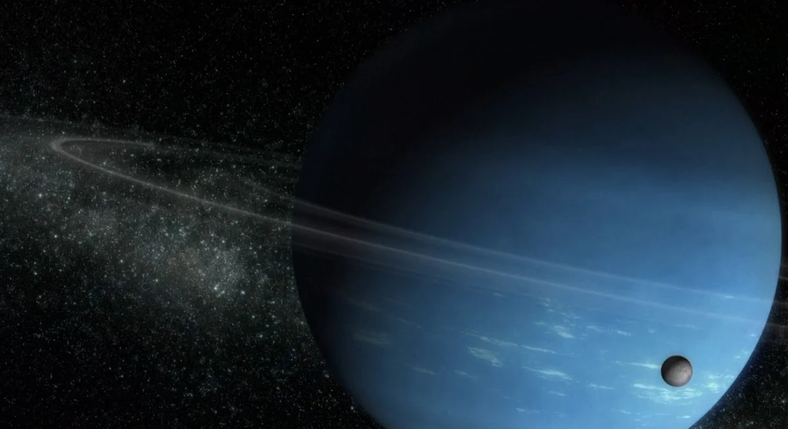
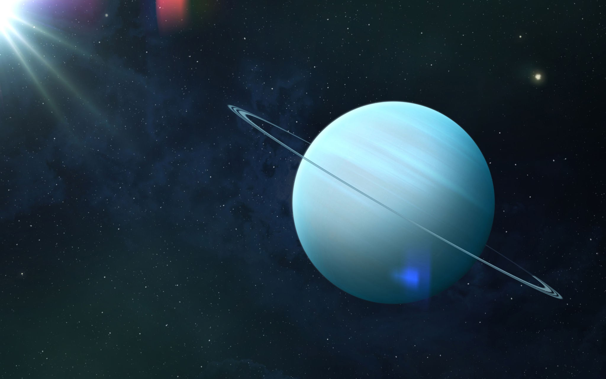
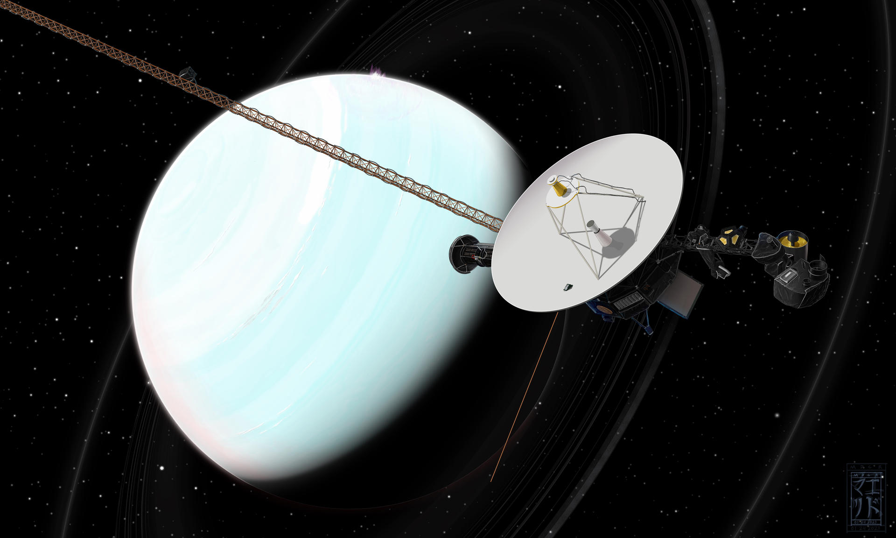

Uranus
Uranus is a planet of the Solar System, seventh in distance from the Sun, third in diameter, and fourth in mass. It was discovered in 1781 by the English astronomer William Herschel and named after the Greek god of the sky, Uranus.

Uranus became the first planet discovered in modern times and with the help of a telescope. It was discovered by William Herschel on March 13, 1781, thus expanding the boundaries of the Solar System in the eyes of humanity for the first time since ancient times. Although Uranus is sometimes visible to the naked eye, earlier observers mistook it for a dim star.
Unlike the gas giants Saturn and Jupiter, which consist mainly of hydrogen and helium, Uranus and its similar planet Neptune lack metallic hydrogen in their cores but contain a lot of ice in its high-temperature modifications. For this reason, experts have classified these two planets into a separate category called "ice giants." The atmosphere of Uranus is primarily composed of hydrogen and helium. Additionally, traces of methane and other hydrocarbons have been detected, as well as clouds of ice, solid ammonia, and water. It has the coldest planetary atmosphere in the Solar System with a minimum temperature of 49 K (-224 °C). Uranus is believed to have a complex stratified cloud structure, with water forming the lower layer and methane the upper layer. The interior of Uranus consists mostly of ice and rocky materials. Like the gas giants of the Solar System, Uranus has a ring system and a magnetosphere, as well as 27 satellites.

Astronomical Characteristics
The average distance from the planet to the Sun is 19.1914 astronomical units (2.8 billion km). Uranus takes 84 Earth years to complete one orbit around the Sun. The distance between Uranus and Earth varies from 2.6 to 3.15 billion km. The rotational period of Uranus around its axis is 17 hours and 14 minutes. However, like on other gas giant planets, very strong winds blow in the upper atmosphere of Uranus, reaching speeds of 240 m/s. As a result, some visible atmospheric features near 60° southern latitude rotate around the planet in just 14 hours.

The equator of Uranus is inclined at an angle of 97.86° to the plane of its orbit—meaning the planet rotates retrograde, "lying on its side with its head slightly down." This leads to a different seasonal cycle compared to other planets in the Solar System. If other planets can be compared to spinning tops, Uranus is more like a rolling ball. This anomalous rotation is usually explained by a collision of Uranus with a large planetesimal during its early formation stages. At solstices, one of the planet's poles is directed toward the Sun. Only a narrow strip near the equator experiences rapid day-night changes, with the Sun very low on the horizon, similar to Earth's polar regions. For half of Uranus's year, one pole is in darkness—and for another 42 years, it is under sunlight. At equinoxes, the Sun is directly over Uranus's equator, resulting in equal day and night lengths, similar to other planets. The latest equinox on Uranus occurred on December 7, 2007.
Uranus's Rings
Uranus has a faint ring system composed of very dark particles ranging in size from micrometers to meter-sized chunks. This is the second ring system discovered in the Solar System (the first being Saturn's ring system). Currently, Uranus is known to have 13 rings, with the brightest being the epsilon ring. Uranus's rings are likely very young—this is indicated by gaps between them and differences in their transparency. This suggests that the rings did not form along with the planet. It is possible that the rings were once part of a moon of Uranus that broke apart either due to a collision with another celestial body or due to tidal forces.
Origin Theory
There are many arguments in favor of differences between the ice giants and gas giants originating during the formation of the Solar System. It is believed that the Solar System formed from a giant rotating cloud of gas and dust known as the protosolar nebula. The cloud then condensed, forming a disk with the Sun at its center. Much of the hydrogen with helium went into forming the Sun. And dust particles began to gather together to eventually form protoplanets. As the planets grew, some of them had strong enough gravitational fields to concentrate residual gas around them. They continued to accumulate gas until they reached a limit, and their growth tapered off exponentially. The ice giants managed to gather much less gas—only a few Earth masses. Thus, their mass did not reach this limit. Modern theories of Solar System formation have some difficulty explaining the formation of Uranus and Neptune. These planets are very large for their distance from the Sun. Perhaps they were closer to the Sun earlier but somehow changed their orbits. However, new planetary modeling methods show that Uranus and Neptune could indeed have formed in their current positions, and thus their actual sizes according to these models do not pose an obstacle to the theory of Solar System origin.
Exploration of Uranus
The discovery of Uranus and its satellites began in the late 18th century when William Herschel discovered the planet itself in 1781, followed by its two largest moons, Titania and Oberon. Further investigations in the 19th and 20th centuries led to the discovery of additional satellites and Uranus's ring system.
Key moments in the history of Uranus exploration include the discovery of new satellites and the planet's rings. An important event was the passage of the Voyager 2 spacecraft near Uranus in 1986. This mission provided valuable data about Uranus's atmosphere, magnetic field, satellites, and rings. Interest in Uranus persists to this day. It is planned that by 2030, the Chinese mission "Tianwen-4" will also explore this mysterious planet, providing new data for our understanding of this remote world in our Solar System.